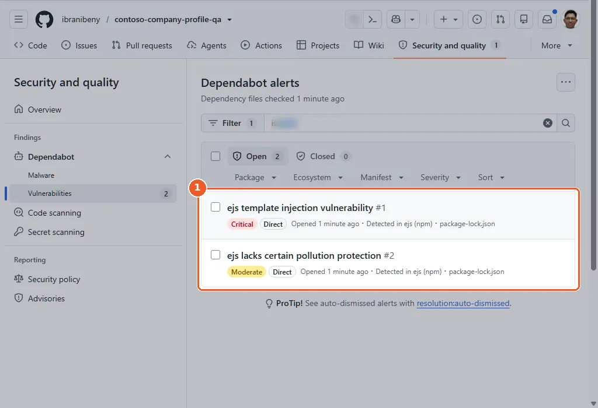
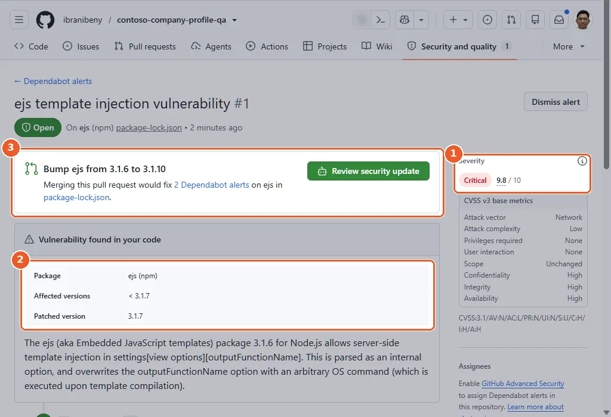
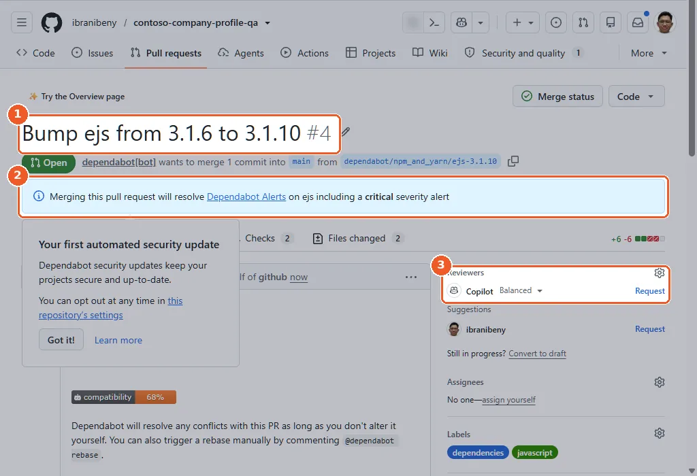
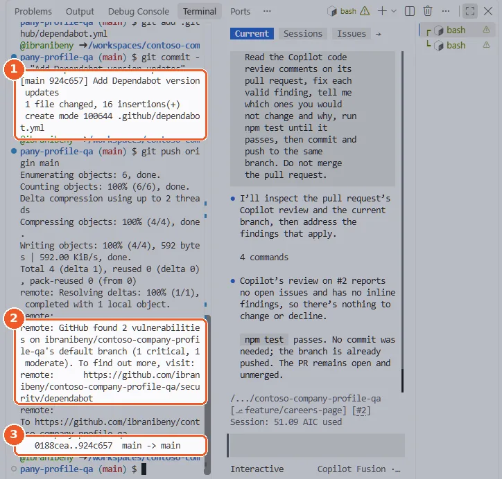

Chapter 6 · about 30 minutes
Dependabot: fix vulnerable and outdated dependencies
Turn on Dependabot alerts and security updates, merge the fix for the vulnerable template engine and let version updates retire the Node.js 20 warnings from Chapter 1.
Raka: “Your site depends on code you never read. One of those packages has a published remote-code-execution advisory. Find it, fix it, and make sure it never goes stale again.”
@ starts a file reference, so @copilot turns into @.github/copilot-instructions.md.Turn on Dependabot alerts and security updates
Open Settings → Advanced Security and enable Dependabot alerts and Dependabot security updates. In a repository made from the template the dependency graph starts off, so GitHub offers to turn on what each setting needs: select Enable in each dialog.
gh api -X PUT "repos/{owner}/{repo}/vulnerability-alerts"
gh api -X PUT "repos/{owner}/{repo}/automated-security-fixes"
gh api "repos/{owner}/{repo}/automated-security-fixes"Optional. It changes a repository setting, which the codespace's built-in token cannot do, so run it where you signed in with your own account (how). Expected last line: "enabled":true.

- 1In a repository made from the template the dependency graph starts off: GitHub asks to enable it too.
- 2Select Enable.

- 1Dependency graph: On.
- 2Dependabot alerts: On.
- 3Dependabot security updates: On.
See the Dependabot quickstart.
Read the alerts
Open Security and quality → Dependabot → Vulnerabilities. The starter pins ejs to 3.1.6, which has published advisories, including template injection fixed in 3.1.7.
gh api "repos/{owner}/{repo}/dependabot/alerts?state=open" \
--jq '.[] | [.number, .security_advisory.severity, .dependency.package.name, .security_vulnerability.first_patched_version.identifier] | @tsv'Optional. It reads security alerts, which the codespace's built-in token cannot do, so run it where you signed in with your own account (how).


- 1Two alerts for ejs, one critical and one moderate, both found in package-lock.json.


- 1Critical, CVSS 9.8.
- 2Versions below 3.1.7 are affected; 3.1.7 is the first patched version.
- 3Dependabot already prepared the fix: select Review security update.
Why it matters: Alerts tell you which advisory, which versions are affected, and the first patched version.

Merge Dependabot's security update
Select Review security update on the alert. Dependabot's pull request upgrades ejs to a patched version (3.1.10 in our run) and CI runs on it. In our run the ruleset did not request a Copilot review on Dependabot's pull request: under Reviewers, select Request next to Copilot. Merge it when it is green.
PR=$(gh pr list --app dependabot --json number,headRefName \
--jq '.[] | select(.headRefName | startswith("dependabot/npm_and_yarn/ejs-")) | .number' | head -n 1)
if [ -n "$PR" ]; then gh pr checks "$PR" --watch && gh pr merge "$PR" --squash --delete-branch
else echo "No ejs security update yet: wait a minute and run this again."; fiFinds Dependabot's ejs security update by its branch, waits for CI and merges it. It works with the codespace's built-in token.


- 1The pull request upgrades ejs to 3.1.10.
- 2Merging it resolves the ejs alerts, including the critical one.
- 3Copilot is not requested automatically on Dependabot pull requests: select Request.
Add version updates for npm and GitHub Actions
Add .github/dependabot.yml with the content below, so Dependabot also keeps packages and workflow actions current every week, grouped into one pull request per ecosystem.
If the push output still reports vulnerabilities on the default branch, do not worry: that count can lag a few minutes behind the security update you just merged.
version: 2
updates:
- package-ecosystem: "npm"
directory: "/"
schedule:
interval: "weekly"
groups:
npm-dependencies:
patterns: ["*"]
- package-ecosystem: "github-actions"
directory: "/"
schedule:
interval: "weekly"
groups:
github-actions:
patterns: ["*"]In the browser: Add file → Create new file, name it .github/dependabot.yml, paste and commit to main.
git switch main && git pull
mkdir -p .github
cat > .github/dependabot.yml <<'EOF'
version: 2
updates:
- package-ecosystem: "npm"
directory: "/"
schedule:
interval: "weekly"
groups:
npm-dependencies:
patterns: ["*"]
- package-ecosystem: "github-actions"
directory: "/"
schedule:
interval: "weekly"
groups:
github-actions:
patterns: ["*"]
EOF
git add .github/dependabot.yml
git commit -m "Add Dependabot version updates"
git push origin mainWrites the same file, commits it and pushes to main.


- 1The heredoc wrote .github/dependabot.yml, committed as Add Dependabot version updates.
- 2This message can still count the old ejs alerts for a minute; they are already fixed.
- 3Pushed to main.
Options: Dependabot options reference.
Merge the GitHub Actions update
About two minutes after the push, Dependabot opens one grouped pull request for the workflow actions and one for the npm packages. Merge the GitHub Actions group: it removes the Node.js 20 deprecation warnings you saw in Chapter 1.
ejs 3 to 7 in our run. Major versions can break the build, so review that pull request on its own rather than merging it in the workshop.gh pr list --app dependabot
PR=$(gh pr list --app dependabot --search "github-actions in:title" --json number --jq '.[0].number')
if [ -n "$PR" ]; then gh pr checks "$PR" --watch && gh pr merge "$PR" --squash --delete-branch
else echo "No GitHub Actions group yet: wait a minute and run this again."; fiDependabot opened its grouped pull requests about two minutes after the push in 6.4. This merges only the GitHub Actions group; leave the npm group open.

- 1One grouped pull request for all GitHub Actions: merged, and the Node.js 20 warnings are gone.
- 2The npm group proposes a major ejs upgrade (3.1.10 to 7.0.2): review it separately.
- 3The security update from step 6.3.
Checkpoint
.github/dependabot.yml is on main.Raka: “Last thing: show me the whole picture, and tell me what we would have to buy to do this on our private repositories.”
Tested end to end on 12 Nov 2026: see the test runReport a problem with this page